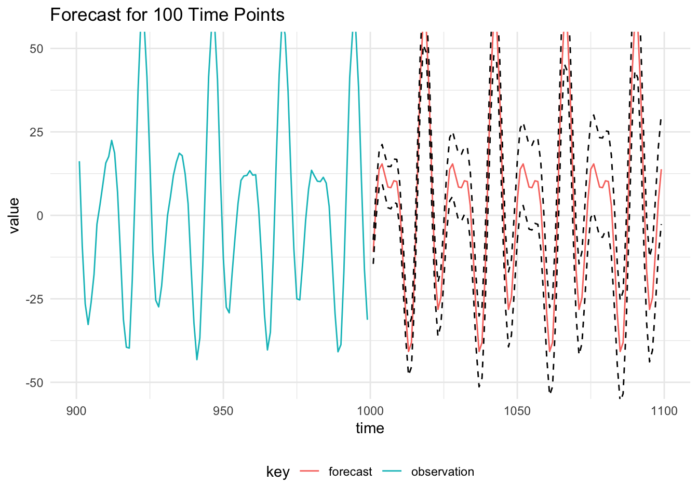

Performing forecasting for future observations of the process using a DLM is equivalent to running the Kalman Filter without any observations in the period of the time of interest. The filter must be initialised using the posterior distribution of the latent state at the time of the last observation, \(x_T \sim \mathcal{N}(m_T, C_T)\) and the static parameters, \(\theta = (V, W)\) have been previously identified using an appropriate parameter learning technique.
Define the seasonal model:
scala> import dlm.model._
import dlm.model._
scala> import cats.implicits._
import cats.implicits._
scala> val mod = Dlm.polynomial(1) |+| Dlm.seasonal(24, 3)
mod: dlm.model.Dlm.Model = Model(<function1>,<function1>)Read in some simulated values from the seasonal model.
scala> import breeze.linalg._
import breeze.linalg._
scala> import java.nio.file.Paths
import java.nio.file.Paths
scala> import kantan.csv._
import kantan.csv._
scala> import kantan.csv.ops._
import kantan.csv.ops._
scala> val rawData = Paths.get("data/seasonal_dlm.csv")
rawData: java.nio.file.Path = data\seasonal_dlm.csv
scala> val reader = rawData.asCsvReader[List[Double]](rfc.withHeader)
reader: kantan.csv.CsvReader[kantan.csv.ReadResult[List[Double]]] = kantan.codecs.resource.ResourceIterator$$anon$6@24ec32c2
scala> val data = reader.
| collect {
| case Success(a) => Data(a.head.toInt, Some(a(1)).map(DenseVector(_)))
| }.
| toArray
data: Array[dlm.model.Data] = Array(Data(1.0,Some(DenseVector(0.4379348004884742))), Data(2.0,Some(DenseVector(1.4108334752047018))), Data(3.0,Some(DenseVector(1.0554007562215737))), Data(4.0,Some(DenseVector(1.6065644463898545))), Data(5.0,Some(DenseVector(-0.9324848268895531))), Data(6.0,Some(DenseVector(-0.41798535825781014))), Data(7.0,Some(DenseVector(3.1133842878248283))), Data(8.0,Some(DenseVector(1.5529700271666615))), Data(9.0,Some(DenseVector(-6.066407414909048))), Data(10.0,Some(DenseVector(-1.3903044774146969))), Data(11.0,Some(DenseVector(1.00857024620827))), Data(12.0,Some(DenseVector(-2.1280969981651334))), Data(13.0,Some(DenseVector(-1.6266216847540287))), Data(14.0,Some(DenseVector(1.8439005505644868))), Data(15.0,Some(DenseVector(0.16211017003365258))), Data(16.0,Some(...Then calculate the mean value of the MCMC parameters, assuming that the parameters have been written to a CSV called seasonal_dlm_gibbs.csv with eight columns, \(V, W_1,\dots,W_7\):
scala> import breeze.stats.mean
import breeze.stats.mean
scala> val mcmcChain = Paths.get("data/seasonal_dlm_gibbs.csv")
mcmcChain: java.nio.file.Path = data\seasonal_dlm_gibbs.csv
scala> val read = mcmcChain.asCsvReader[List[Double]](rfc.withHeader)
read: kantan.csv.CsvReader[kantan.csv.ReadResult[List[Double]]] = kantan.codecs.resource.ResourceIterator$$anon$6@2967240
scala> val params: List[Double] = read.
| collect { case Success(a) => a }.
| toList.
| transpose.
| map(a => mean(a))
params: List[Double] = List(0.8845079756307068, 0.14898898017307993, 0.2796182358596836, 0.28173619914799153, 0.2758751247272198, 0.2816157274900601, 0.2519573345917604, 0.24110852919544112)
scala> val meanParameters = Dlm.Parameters(
| v = DenseMatrix(params.head),
| w = diag(DenseVector(params.tail.toArray)),
| m0 = DenseVector.zeros[Double](7),
| c0 = DenseMatrix.eye[Double](7)
| )
meanParameters: dlm.model.Dlm.Parameters =
Parameters(0.8845079756307068 ,0.14898898017307993 0.0 0.0 ... (7 total)
0.0 0.2796182358596836 0.0 ...
0.0 0.0 0.28173619914799153 ...
0.0 0.0 0.0 ...
0.0 0.0 0.0 ...
0.0 0.0 0.0 ...
0.0 0.0 0.0 ...,DenseVector(0.0, 0.0, 0.0, 0.0, 0.0, 0.0, 0.0),1.0 0.0 0.0 0.0 0.0 0.0 0.0
0.0 1.0 0.0 0.0 0.0 0.0 0.0
0.0 0.0 1.0 0.0 0.0 0.0 0.0
0.0 0.0 0.0 1.0 0.0 0.0 0.0
0.0 0.0 0.0 0.0 1.0 0.0 0.0
0.0 0.0 0.0 0.0 0...When then use these parameters to get the posterior distribution of the final state:
scala> val filtered = KalmanFilter.filter(mod, data, meanParameters)
filtered: Array[dlm.model.KalmanFilter.State] =
Array(State(0.0,DenseVector(0.0, 0.0, 0.0, 0.0, 0.0, 0.0, 0.0),1.0 0.0 0.0 0.0 0.0 0.0 0.0
0.0 1.0 0.0 0.0 0.0 0.0 0.0
0.0 0.0 1.0 0.0 0.0 0.0 0.0
0.0 0.0 0.0 1.0 0.0 0.0 0.0
0.0 0.0 0.0 0.0 1.0 0.0 0.0
0.0 0.0 0.0 0.0 0.0 1.0 0.0
0.0 0.0 0.0 0.0 0.0 0.0 1.0 ,DenseVector(0.0, 0.0, 0.0, 0.0, 0.0, 0.0, 0.0),1.0 0.0 0.0 0.0 0.0 0.0 0.0
0.0 1.0 0.0 0.0 0.0 0.0 0.0
0.0 0.0 1.0 0.0 0.0 0.0 0.0
0.0 0.0 0.0 1.0 0.0 0.0 0.0
0.0 0.0 0.0 0.0 1.0 0.0 0.0
0.0 0.0 0.0 0.0 0.0 1.0 0.0
0.0 0.0 0.0 0.0 0.0 0.0 1.0 ,None,None,0.0), State(1.0,DenseVector(0.08614736680800719, 0.0959415133139168, 0.0, 0.09566086730834508, 0.0, 0.09386759106671745, 0.0),0.92296817...
scala> val (mt, ct, initTime) = filtered.map(a => (a.mt, a.ct, a.time)).last
mt: breeze.linalg.DenseVector[Double] = DenseVector(5.30023592316088, 13.364804116054309, -5.823030583899986, 13.322842653403423, -11.996595079225864, -10.074359078424946, -19.0726279240834)
ct: breeze.linalg.DenseMatrix[Double] =
1.4824923547284103 -0.5079954882956018 -0.9844789894569338 ... (7 total)
-0.5079954882956017 2.3938974914696387 -0.3161714269117561 ...
-0.9844789894569342 -0.31617142691175604 3.2787915997106905 ...
-0.4705834380671068 -0.9062770408728755 0.8922250858640552 ...
-0.2975488930219069 -0.9560703098100984 -0.1781542556845435 ...
-0.3476505885453832 -0.6942286459009825 0.30571047004505203 ...
0.06742023869212262 0.02013481934000952 -0.2811795486093878 ...
initTime: dlm.model.Time = 1000.0We then initialise the forecast function with state state posterior at the time of the last observation:
scala> val forecasted = Dlm.forecast(mod, mt, ct, initTime, meanParameters).
| take(100).
| toList
forecasted: List[(dlm.model.Time, Double, Double)] = List((1000.0,21.913523614193664,1.60512413134061), (1001.0,-2.960331273551211,964.5423462993369), (1002.0,20.04759248898447,1919.5370269888276), (1003.0,-21.272204070425918,2885.383255540375), (1004.0,55.90941644452681,3852.8401892725688), (1005.0,1.632124655051868,4789.02559567327), (1006.0,-7.726256869010135,5755.52830011983), (1007.0,-0.03667277728477636,6711.793895470083), (1008.0,-0.03667277728477636,7675.885088224641), (1009.0,-7.726256869010133,8640.049417014416), (1010.0,1.6321246550517827,9600.134617647604), (1011.0,55.9094164445268,10582.600354655138), (1012.0,-21.272204070425797,11560.676778282743), (1013.0,20.04759248898445,12513.907668438816), (1014.0,-2.960331273551306,13472.208337275617), (1015.0,21.91352361419347,14428...The results of the forecasting and 95% prediction intervals are below:

The Kalman Filter can not be applied to state space models with non-Gaussian observation distributions. Particle filtering is commonly used to approximate the filtering distribution using a cloud of \(M\) particles. The time series currently has observations at times \(t = 1,\dots,T\) and we are interested in an observation \(k\) time-steps in the future:
Summaries of the observation distribution can then be calculated.
TODO